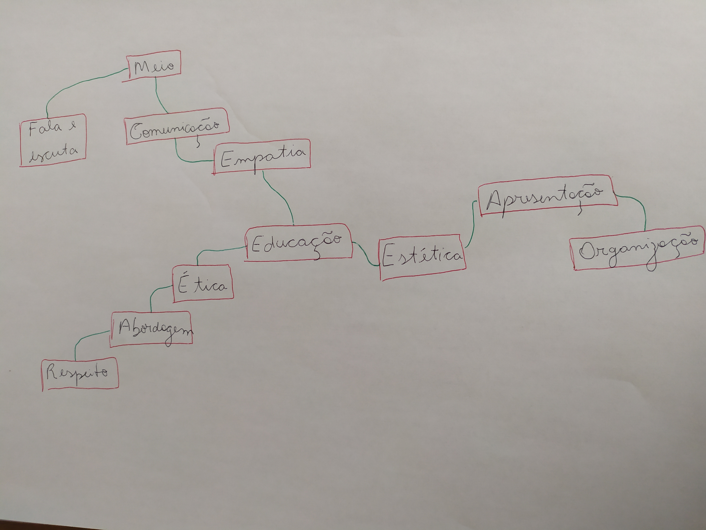
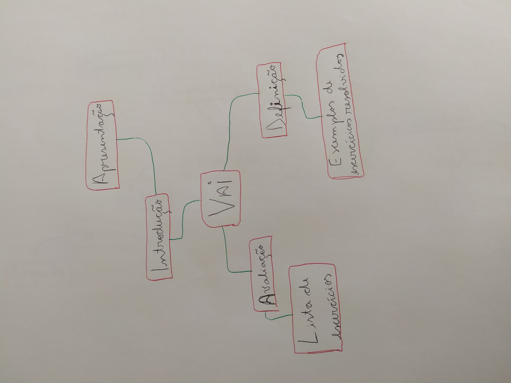
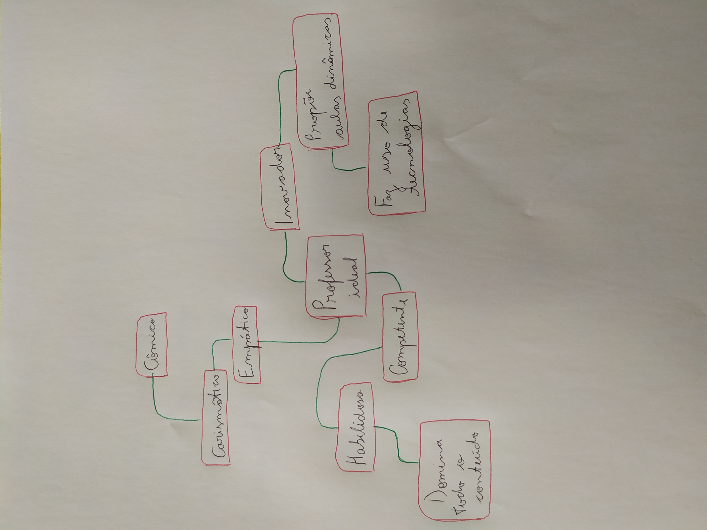

.jpg)
>Imagem no parágrafo abaixo:
Tocador de som abaixo:
Tocador de vídeo abaixo:
Tocador de vídeo abaixo:
Minha vídeo aula individual foi feita da melhor forma possível com os recursos limitados que eu tenho. Tive de ser criativo e usar diversos sites/app pois fiz tudo com o celular, desde a filmagem, edição, explicação até subir o vídeo. Quanto ao conteúdo, abordei o tema “Equação do 1º Grau”, trouxe tudo àquilo que era necessário para aprender a matéria e começar a resolução de exercícios, através de diversos exemplos e o uso da letra corrida no papel para aproximar o aluno do cenário real em que ele resolve exercícios e estuda. Também como forma de avaliação trouxe os exercícios de fixação, fiz uma aula curta e de fácil entendimento. Nota: 9,0 .
No final de 2016, estava no primeiro ano do ensino médio e ainda meio perdido quanto às aulas, conteúdo e visão de futuro. Estava apenas assistindo aula e não levando o estudo com tanta seriedade, foi ai que entrou meu primo Raul. Meu primo, quase seis anos mais velho foi meu exemplo de sucesso a ser seguido, chegou a ingressar em universidade pública em engenharia, mas decidiu largar e através de concurso público foi para o serviço militar. Assim sendo, Raul passou a me orientar nas disciplinas de física e matemática, que vieram se tornar minhas preferidas na escola, me cedendo os respectivos materiais didáticos que havia usado para estudar em sua época de vestibulando e contribuindo para o meu sucesso escolar .
>Imagem no parágrafo abaixo:

>Imagem no parágrafo abaixo:

>Imagem no parágrafo abaixo:

1) O que é que tens mais vontade de ensinar? R. Tenho vontade de ensinar matemática. 2) A quem gostaria mais de ensinar? R. Aos alunos do ensino fundamental e médio. 3) Porque você quer ensinar? R. Porque é a área em que eu mais domino e acredito ser bom em ensinar. 4) Como você sabe que está ensinando bem? R. Através do desempenho dos alunos em atividades individuais e em grupo. 5) O que é que você mais deseja aprender a cerca de ensino e aprendizagem? R. Aprender a didática correta e a forma com que devo proceder a uma aula de forma clara e coesa. 6) Quais coisas específicas você acredita serem mais adequadas no ensino e na aprendizagem? R. Acredito que seja a dedicação e a vontade de ambas as partes, professor e aluno. .
Tocador de video abaixo:
Tocador de áudio abaixo: